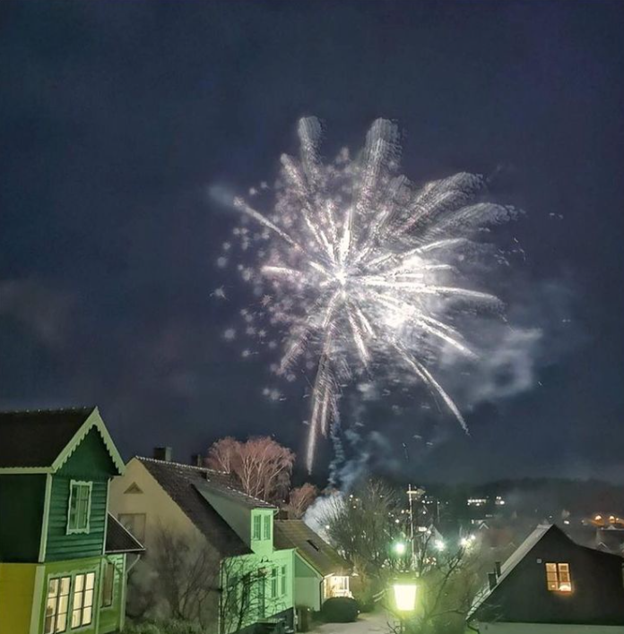

Året runt på Kivik
Nyår på Österlen - vi går mot ljusare tider!

Sportlov med aktiviteter för hela familjen!
Möt våren med påskfirande på Kivik!

Matrundan - en smakrik Österlentradition!

Österlen lyser - ljusfest i höstmörkret!

Sommarens samlingspunkt - Kiviks Marknad!
Äppelveckorna på Kivik - en fest för alla sinnen!
Upplev Kivik med rabatter och erbjudanden!

Glada Barn på Kivik - barnens favorit!